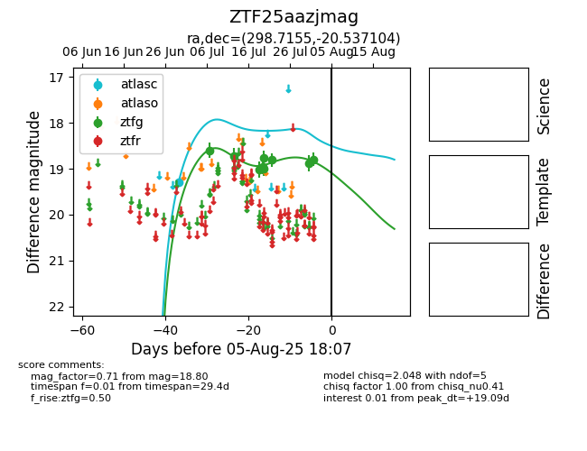

Target ZTF25aazjmag at 2025-08-05 18:07, see:
FINK: fink-portal.org/ZTF25aazjmag
Lasair: lasair-ztf.lsst.ac.uk/objects/ZTF25aazjmag
ALeRCE: alerce.online/object/ZTF25aazjmag
alt names
ZTF25aazjmag (ztf,fink)
coordinates:
equatorial (ra, dec) = (298.7155,-20.53710)
galactic (l, b) = (20.6839,-22.80990)
photometry
last atlasc=19.29, ztfg=18.80
1 atlasc, 9 ztfg detections
